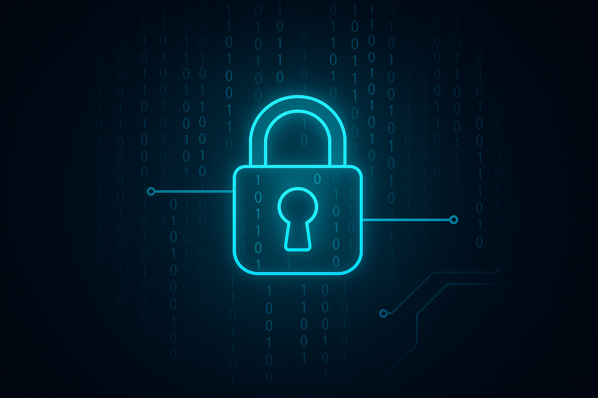

Hackissimo.tech
Cybersecurity: difendersi oggi
La digitalizzazione di ogni aspetto della nostra vita ha portato enormi benefici ma anche rischi crescenti. Secondo recenti indagini, oltre il 40 % delle aziende ha subito un attacco informatico e il costo medio di una violazione può superare i 5 milioni di dollari. Le minacce spaziano dal ransomware, che cifra i dati e chiede riscatti, ai sofisticati attacchi supply chain che sfruttano vulnerabilità nei fornitori per infiltrarsi nelle reti. A fronte di queste sfide, il mercato della cybersecurity è destinato a crescere rapidamente e potrebbe superare i 370 miliardi di dollari entro la fine del decennio.
L’intelligenza artificiale sta diventando un alleato fondamentale nella difesa: algoritmi di rilevamento comportamentale analizzano il traffico di rete per individuare anomalie in tempo reale, mentre i sistemi di risposta automatizzata bloccano le minacce senza intervento umano. Tuttavia, gli stessi strumenti possono essere utilizzati dai criminali per creare attacchi più credibili, ad esempio generando email di phishing indistinguibili da quelle genuine. Inoltre, l’esplosione dei contenuti generati da IA ha dato vita alle cosiddette "deepfake": video e audio falsificati che possono essere usati per frodi, disinformazione o ricatti.
Per proteggersi è necessario adottare un approccio multilivello. Oltre a soluzioni tecnologiche avanzate, resta fondamentale la formazione degli utenti: password robuste, attenzione ai link sospetti e aggiornamenti regolari del software sono ancora le prime linee di difesa. A livello organizzativo si diffonde l’approccio "zero trust", che non considera attendibile nessun dispositivo di default e richiede autenticazioni continue. La collaborazione tra aziende, governi e ricercatori è essenziale per condividere informazioni sulle minacce e sviluppare standard. In un mondo sempre più connesso, investire nella sicurezza non è un costo ma un requisito indispensabile per la continuità operativa e la tutela della reputazione.
← Torna alla home